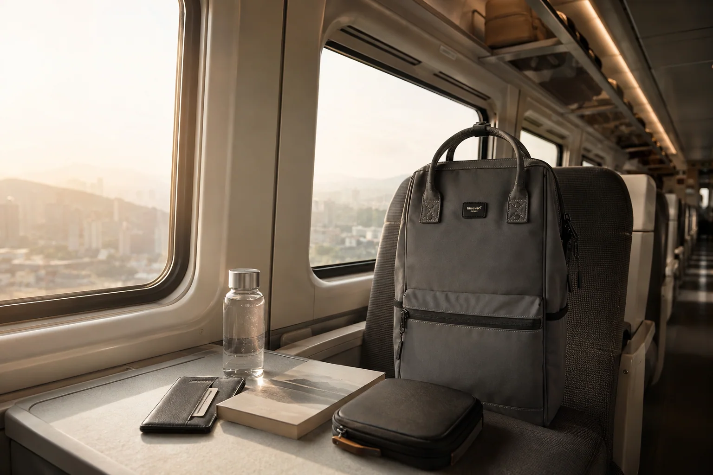

기차 여행 백팩 준비법: 좌석·선반·환승 동선을 위한 5단계

기차 여행의 짐은 단순히 적게 싸는 것보다 승차, 좌석 생활, 환승과 하차 순서에 맞춰 나누는 것이 중요합니다. 필요한 물건 하나를 찾으려고 선반의 가방을 반복해서 내리지 않도록 이동 중 사용할 것과 도착 후 사용할 것을 처음부터 구분해 보세요.
1. 운행사와 열차의 수하물 안내를 확인하세요
열차 종류와 좌석에 따라 선반 크기, 대형 수하물 공간과 반입 기준이 다를 수 있습니다. 출발 전 공식 안내와 예약 정보를 확인하고, 자신의 좌석 주변에 둘 수 있는 크기를 기준으로 백팩을 고릅니다. 통로나 비상 동선을 막는 위치에는 가방을 두지 않습니다.
2. 이동 중 사용할 물건을 한 구역에 모으세요
승차권, 휴대폰, 이어폰, 보조배터리, 물과 얇은 겉옷은 큰 수납칸 깊숙이 넣지 않습니다. 몸에 가까운 안전한 주머니와 한 개의 작은 파우치에 나누면 좌석에서도 필요한 것만 꺼낼 수 있습니다. 케이블은 충전기·케이블 수납법처럼 짧게 묶어 두세요.
3. 선반에 올릴 때를 생각해 무게를 잡으세요
무거운 물건을 바깥쪽에 몰아 넣으면 가방을 들어 올릴 때 균형이 흔들립니다. 무거운 책이나 전자기기는 등판 가까운 아래쪽에, 가벼운 옷은 바깥쪽과 위쪽에 둡니다. 가방을 올리기 전에 지퍼와 버클이 모두 잠겼는지 확인하고 느슨한 끈은 정리합니다.
열차 선반을 이용한다면 가방이 선반 안쪽에 안정적으로 놓였는지 살피고, 떨어질 위험이 있는 위치에는 두지 않습니다. 필요한 경우 승무원이나 운영사의 안내를 따르세요.
4. 환승용 10분 파우치를 만드세요
환승 역에서 바로 쓸 승차권, 교통카드, 휴대폰과 작은 간식을 하나의 얇은 파우치에 모읍니다. 플랫폼에서 큰 수납칸을 열지 않아도 되므로 이동이 단순해집니다. 파우치는 외부에서 쉽게 보이는 곳보다 몸에 가까운 깊은 포켓에 두고 사용 후 항상 같은 자리에 돌려놓습니다.
5. 도착 10분 전에 하차 순서로 정리하세요
도착 안내가 나오기 전에 충전 케이블, 물병과 책을 차례로 넣고 좌석 주변과 선반을 확인합니다. 휴대폰과 지갑은 손에 들고 움직이기보다 정한 주머니에 넣습니다. 어깨끈 길이를 맞추고 느슨한 스트랩이 통로나 다른 짐에 걸리지 않는지 확인한 뒤 천천히 이동하세요.
출발 전 기차 여행 체크리스트
- 열차의 최신 수하물 안내를 공식 채널에서 확인했나요?
- 승차권과 휴대폰의 자리를 한 곳으로 정했나요?
- 좌석에서 쓸 물건이 큰 짐과 분리되어 있나요?
- 무거운 물건이 등판 가까운 쪽에 있나요?
- 지퍼, 물병 뚜껑과 늘어진 끈을 확인했나요?
- 환승과 하차 시간을 미리 알림으로 설정했나요?
기차에서 내려 하루를 가볍게 이어가려면 일정에 필요한 만큼만 담는 것이 좋습니다. 당일치기 백팩 짐싸기와 1박 2일 여행 체크리스트에서 일정 길이에 맞는 구성을 비교해 보세요.
참고·안내
- 열차별 수하물 기준과 시설은 달라질 수 있으므로 출발 전 이용하는 운행사의 최신 공식 안내를 확인해 주세요.
- Himawari 여행·직장인 백팩 제품 정보
- 대표 이미지는 Himawari No.1884 제품을 바탕으로 만든 연출 이미지입니다.
자주 묻는 질문
기차 안에서 백팩은 어디에 두나요?
열차와 좌석에 따라 공간이 다릅니다. 승차 전 운영사의 수하물 안내를 확인하고, 선반을 쓸 때는 가방이 안정적으로 놓이며 통로를 방해하지 않는지 살피세요.
승차권과 휴대폰은 어느 주머니에 넣나요?
깊고 여닫기 쉬운 안쪽 또는 몸에 가까운 주머니 한 곳을 정해 두세요. 혼잡한 승강장에서는 가방을 열어 둔 채 이동하지 않습니다.
환승이 있으면 어떻게 싸야 하나요?
환승 시간에 쓸 승차권, 휴대폰, 보조배터리와 얇은 겉옷을 큰 짐과 분리해 한 번에 꺼낼 수 있는 구역에 둡니다.